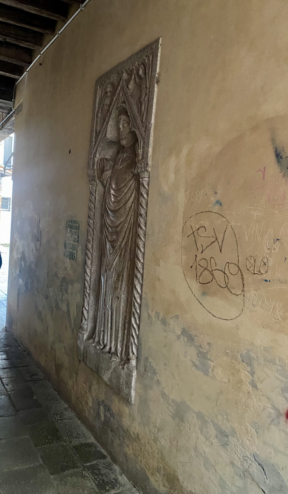
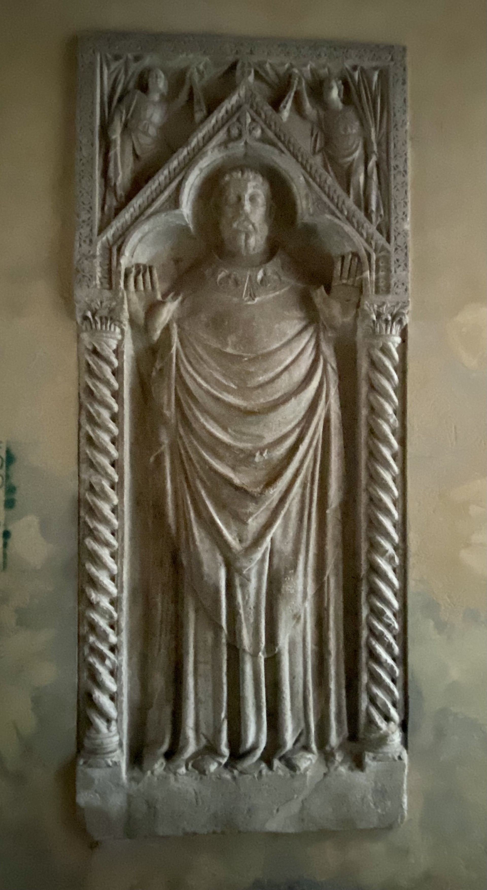

Over the centuries, in the narrow space of the portico of the Church of San Simeon Grando, inexplicable disappearances of people occurred[cite: 2].
In this portico, there is the shrine of San Ermolao, a white marble tombstone sculpted in 1382[cite: 3].

A theory suggests that the bas-relief, whose shape resembles a door, hides a passage to other universes[cite: 5].
The saint is depicted standing with his arms raised and hands open[cite: 3]. It is believed that placing your fingertips on the saint's fingers and pressing gently could cause the entire stele to sink into the wall, absorbing the human presence[cite: 6, 7].

For it to work, the portal required a conductor of energy: a large wooden cross that was removed in the 1960s and has been missing ever since[cite: 8, 9].